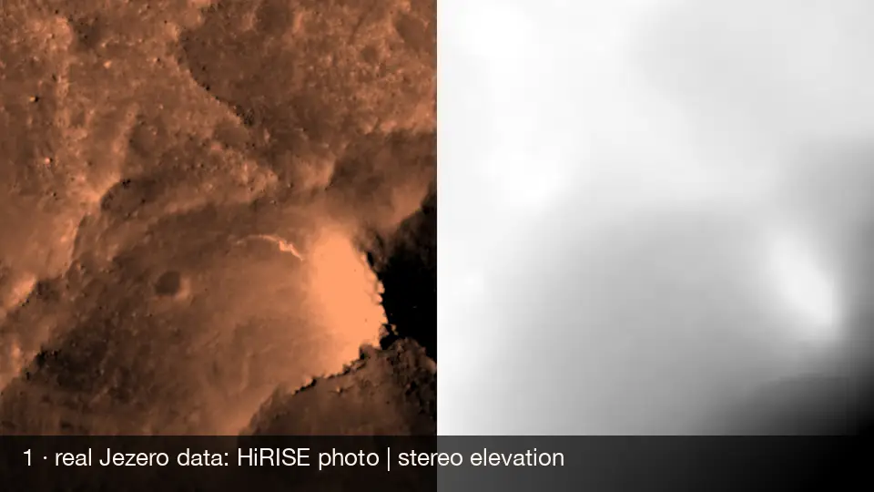
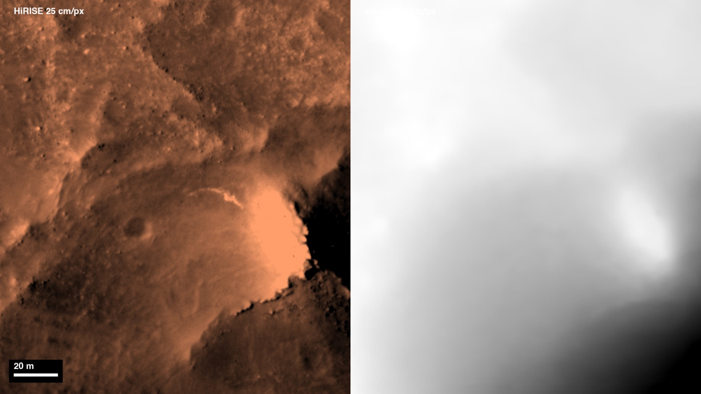
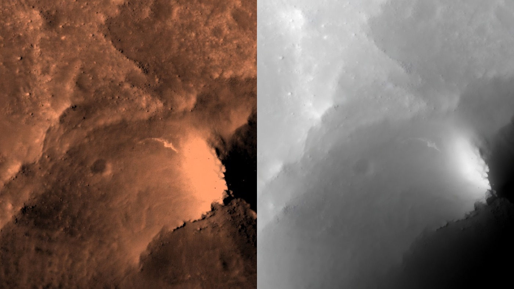
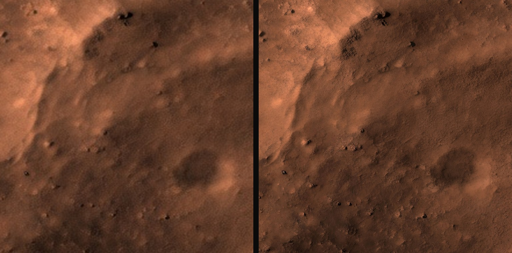
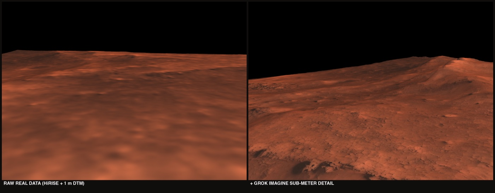
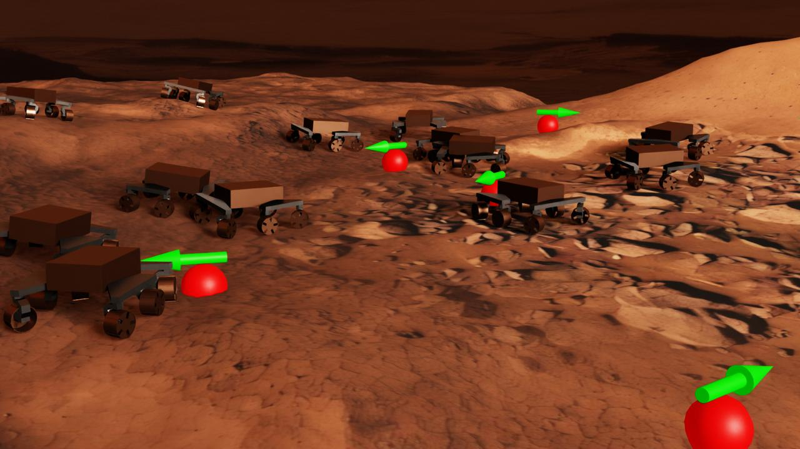
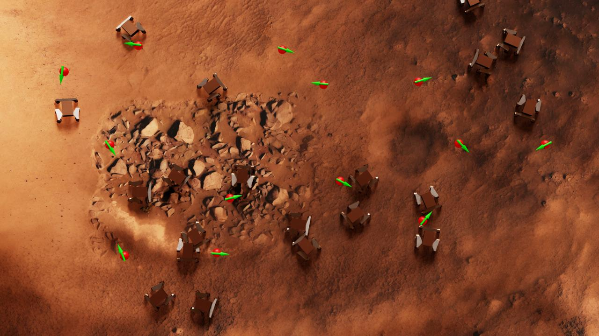

Every world starts from Jezero Crater as photographed by NASA's Mars Reconnaissance Orbiter: the maps the Perseverance rover navigated against to land.
Its HiRISE camera sees 25 cm: the sharpest imagery that exists of Mars.
Elevation is estimated by comparing two photos of the same ground taken from different angles, an estimate too coarse to capture rover-scale rocks.
Grok Imagine turns what the camera sees into elevation, checked against the real measurements.

The pipeline in one loop: real data, Grok Imagine edit, recursive re-render, drivable world

1. Seed canvas from real data: HiRISE photo | stereo elevation

2. Grok Imagine edit: rover-scale rocks and ripples in both halves

3. Recursive re-rendering: 84 Grok Imagine image edits per world, 8x texture density

4. Built USD scene, same spot: raw orbital data vs. full pipeline

GrokRovers on pipeline terrain. Red sphere: the goal. Green arrow: commanded heading.
Hundreds of GrokRovers learn to drive simultaneously on GPU.

Overhead view of the training run
31 real Jezero worlds plus one imagined from scratch, each a self-contained USD scene with full real-data provenance. GrokRover trains across all of them.